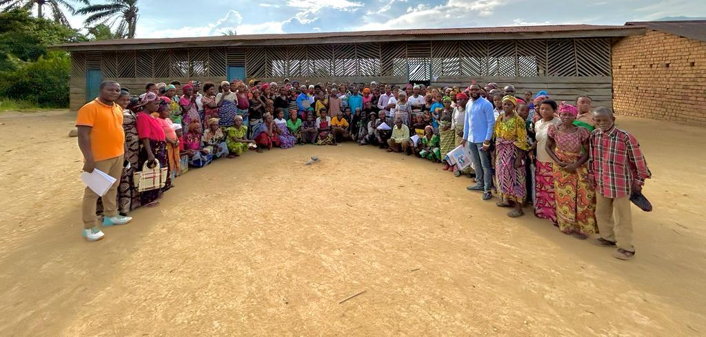

En cours
Autonomisation économique
AVEC & AGR
Épargner, entreprendre et gagner en autonomie.
Bukavu et zones rurales appuyées, Sud-Kivu
Découvrir l’activité →NOS ACTIVITÉS
Découvrez les activités en cours et le projet THIMO / STEP achevé en 2023–2024.
Autonomisation économique
Épargner, entreprendre et gagner en autonomie.
Bukavu et zones rurales appuyées, Sud-Kivu
Découvrir l’activité →
Leadership et cohésion sociale
Renforcer les capacités et faire vivre le dialogue.
Sud-Kivu
Découvrir l’activité →
Réintégration socio-économique
Des travaux publics au service de la réintégration économique.
Kamituga, Bukavu et Uvira, Sud-Kivu
Découvrir l’activité →